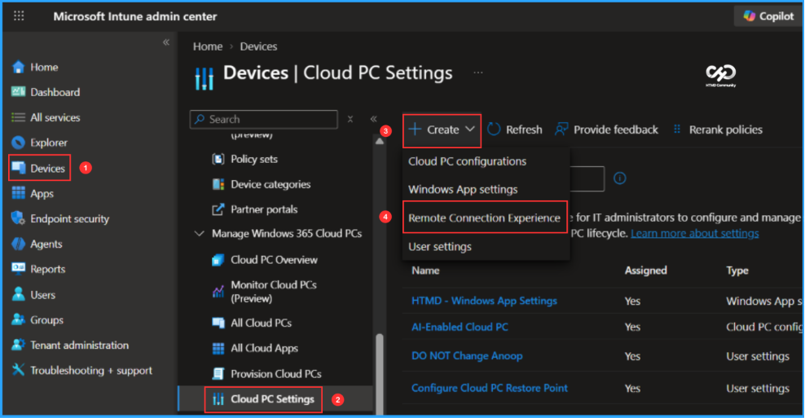
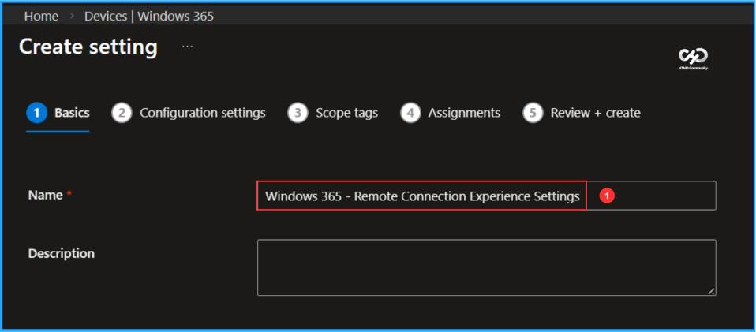
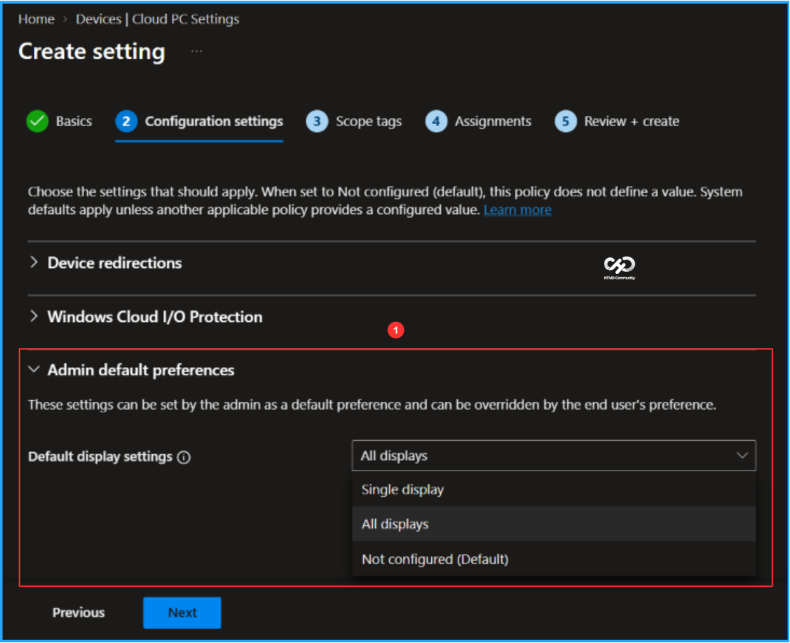
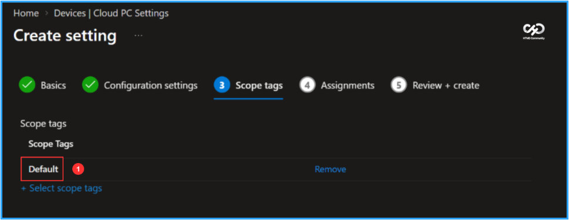
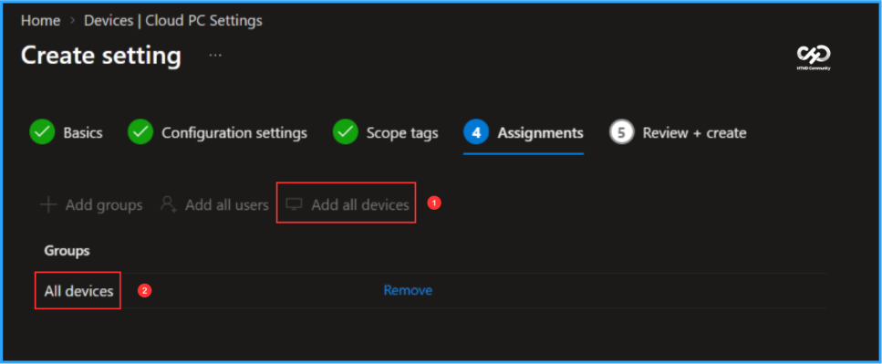
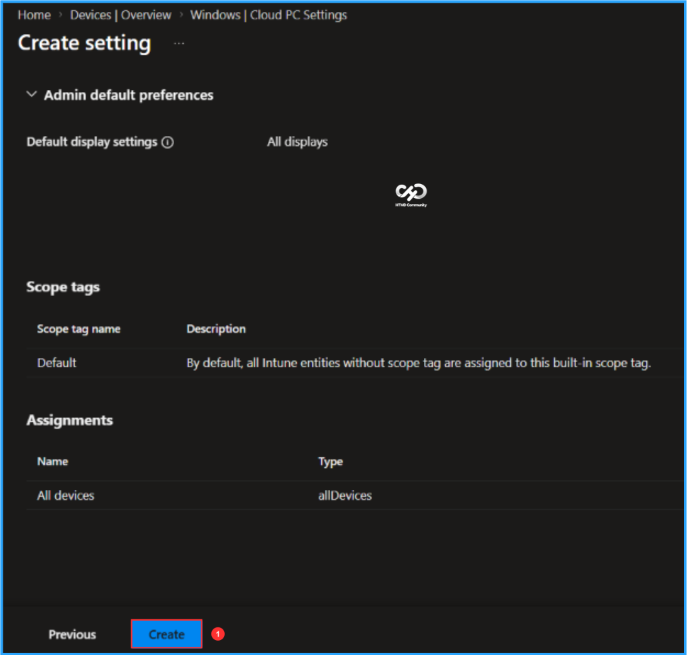
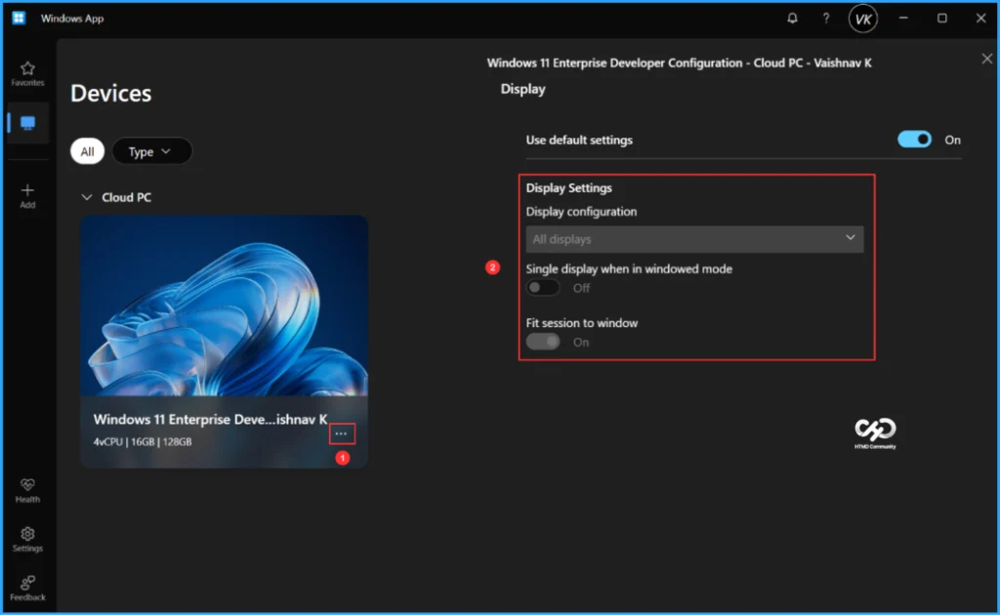

Key Takeaways
- Configure Default Display Settings: Set a default display experience for Windows 365 Cloud PCs using Intune.
- Choose Display Preferences: Configure the default to use a single display or all available displays.
- Improve User Experience: Provide a consistent display experience for Cloud PC connections across your organization.
- Maintain User Flexibility: Users can still override the administrator-defined defaults through their Windows App display preferences.
In this quick article, let’s check how to set Default Display Settings for Windows 365 Cloud PCs using Microsoft Intune. The new Default Display Settings option in the Windows 365 Remote Connection Experience settings is now generally available. IT administrators can configure the default display experience for Cloud PCs by choosing either a single display or all displays. This helps provide a consistent user experience while allowing users to customize their display preferences through Windows App whenever needed.
Table of Content
Remote Connection Experience Settings in Windows 365
The Remote Connection Experience settings in Microsoft Intune allow IT administrators to configure and manage Cloud PC connection behaviour, device redirection, Windows Cloud I/O protection, and default user preferences. These settings help organisations standardise the remote access experience while applying appropriate security and usability controls. Here is the Overview of Available Settings.
| Setting Category | Brief Description |
|---|---|
| Admin default preferences | Define default preferences for the remote connection experience managed by IT administrators. |
| Windows Cloud I/O Protection | Configure supported protection settings for I/O operations in the Windows Cloud PC environment. |
| Device redirections | Configure which local device resources can be redirected to a Cloud PC during a remote session. |
Configure Set Default Display Settings for Windows 365 in Intune
To configure Set Default Display Settings Remote Connection Experience for Windows 365, login to the Microsoft Intune Admin Center using your administrator credentials.
- Navigate to > Devices > Device onboarding > Windows 365
- Click on Settings > +Create > Remote Connection Experience

In the Basics details pane, name the new settings Set Default Display Settings for Windows 365 Cloud PCs and, if required, provide a brief description. After that, click Next.

In Configuration settings, the Admin default preferences option is set to Not configured by default. Select Default display settings, then choose All displays from the drop-down menu.

On the next pane, keep Scope tags set to Default. If your tenant uses custom scope tags, select the appropriate tags based on your requirements, and then click Next.

For this example, I’m assigning the settings to the All devices group. With the latest update, IT administrators can assign Windows 365 Cloud PC settings to specific user groups, device groups, All users, or All devices, depending on the assignment options supported by the policy. To target all devices, click Add all devices.

On the Review + create page, carefully review all the settings you’ve defined for the Set Default Display Settings for Windows 365 Cloud PCs. Once you’ve confirmed everything is correct, select Create to deploy it.

a
Now, let’s verify the admin-configured experience. Open the Windows App and connect to the assigned Cloud PC. Once connected, select the three dots (…) and open Settings.
Under the Cloud PC display details, you can see that Display configuration is set to All displays and the option is greyed out, preventing the user from changing it. This confirms that the Admin default preferences configured under Remote Connection Experience for the Cloud PC are being applied as expected.

Need Further Assistance or Have Technical Questions?
Join the LinkedIn Page and Telegram group to get the latest step-by-step guides and news updates. Join our Meetup Page to participate in User group meetings. Also, join the WhatsApp Community to get the latest news on Microsoft Technologies. We are there on Reddit as well.
Author
Vaishnav K has over 13 years of experience in SCCM, Intune, Modern Device Management, and Automation Solutions. He writes and shares knowledge about Microsoft Intune, Windows 365, Azure, Entra, PowerShell Scripting, and Automation. Check out his profile on LinkedIn.